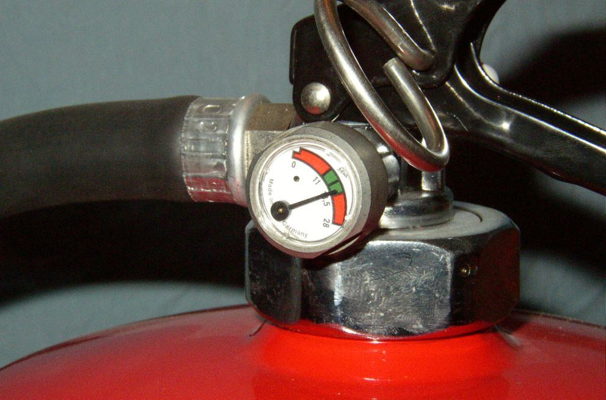

بيانات صادرات طفايات الحريق من الصين 2024-2026: 480 مليون دولار من الوحدات، و245 مليون دولار من قطع الغيار، وسوق المستعمل الذي لا يُحصى
كل مستورد يسأل السؤال نفسه قبل حاويته الأولى: كم حجم هذا السوق، ومن هم منافسيّ فعليًا؟ هذا ما تستطيع ثلاثة أعوام من البيانات الجمركية الصينية الإجابة عنه، وما لا تستطيع الإجابة عنه، ولماذا القائمة الثانية أطول مما يعترف به بائعو بيانات التجارة.

الخلاصة في فقرة
صدّرت الصين طفايات حريق بقيمة 479.5 مليون دولار في 2025، وقطع غيار بقيمة 245.0 مليون دولار، ومواد إطفاء بقيمة 38.5 مليون دولار. وفي الفترة حتى سبتمبر 2026 ينمو بند الوحدات بنسبة 9.2% عن الفترة المقابلة، وقطع الغيار 16.3%، ومواد الإطفاء 41.3%.
الرقم الغائب عن الفقرة السابقة هو ما يريده الناس فعلًا: كم من تلك الوحدات كان مستعملًا. الإحصاءات الصينية لا تجيب عن ذلك، لأنه لا يوجد رمز منفصل للطفايات المستعملة في أي جدول تعرفة في العالم. وفهم سبب هذه الفجوة، وما ينبغي النظر إليه بدلًا منها، أنفع من أي رقم منفرد.
كيف تُقرأ هذه البيانات
- المصدر. سجلات التصدير الجمركية الصينية على مستوى التصريح ذي العشرة أرقام، كما تجمعها قواعد بيانات التعرفة الجمركية، ومقارَنة مع قاعدة UN Comtrade لعام 2024 حيث تتوافق القيمتان في القيمة وعدد الوحدات ضمن 0.1%.
- حد التاريخ. عاما 2024 و2025 كاملين، مع يناير إلى سبتمبر 2026. لا يوجد رقم كامل لعام 2026، وهذا المقال لا يقدّم أي توقع له.
- الأساس. FOB بالدولار الجاري دون تعديل تضخمي، وتشمل القيم إعادة تصدير سلع مستوردة.
- الفجوة. لا يوجد بند يفصل الجديد عن المستعمل. الحالة تفصيل في التصريح لا تصنيف. وكل نسبة "مستعمل" في هذا المقال محسوبة رياضيًا ومعلَّمة كذلك.
- الوحدات. يبلّغ عنها المصدّر وتختلف بين أنواع المنتجات، لذا تُستخدم أعداد الوحدات كمؤشر اتجاه فقط.
ثلاثة بنود، وثلاثة أعمال مختلفة
ما يسميه الناس "صادرات طفايات الحريق" هو في الحقيقة ثلاثة تدفقات بثلاثة عملاء مختلفين. البند الأول فقط هو ما يتصوره معظم المستوردين.
| البند الصيني | ما يغطيه | 2024 | 2025 | يناير-سبتمبر 2026 | 2026 مقابل 2025 |
|---|---|---|---|---|---|
| 8424100090 | طفايات حريق مشحونة أو غير مشحونة (الجديد والمستعمل بالتساوي) | $447.7m | $479.5m | $389.6m | +9.2% |
| 8424901000 | أجزاء الطفايات: صمامات، مقاييس ضغط، خراطيم، حوامل، أسطوانات فارغة | $226.3m | $245.0m | $219.2m | +16.3% |
| 3813001000 | مواد إطفاء: مسحوق ABC وBC ومركّز الرغوة | $38.8m | $38.5m | $40.0m | +41.3% |
اقرأ الصف الأوسط مرتين. في 2025 صدّرت الصين 51 سنتًا من قطع الغيار مقابل كل دولار من الطفايات الكاملة. هذا ليس خطأ تقريب في صناعة ناضجة، بل بصمة قاعدة تركيب ضخمة تُصان ولا تُستبدل. كل صمام ومقياس وخرطوم وحامل في هذا الرقم هو قرار من شخص ما، في مكان ما، بإبقاء أسطوانة في الخدمة بدل شراء أخرى جديدة.
كما تنمو قطع الغيار أسرع من الوحدات: +16.3% مقابل +9.2% في الأشهر التسعة الأولى من 2026. وإن كنت تخطط لمركز في هذه التجارة لخمس سنوات، فهذا الفارق هو أنفع رقم في المقال.
الصادرات الشهرية من الطفايات (8424100090)، أكتوبر 2025 - سبتمبر 2026
مليون دولار شهريًا. إجمالي الاثني عشر شهرًا المنتهية في سبتمبر: $512 مليون.
الهبوط في فبراير ومارس هو المتوقع: رأس السنة الصينية تُفرغ المصانع من أسبوعين إلى ثلاثة، والطلبات المحجوزة في يناير تُشحن في أبريل. وإن وعدك مورّد بشحن في مارس إلى ميناء خليجي فاسأله عن اسم السفينة، لأن القطاع كله يفتقد المخزون في ذلك الشهر.
إلى أين يذهب المال، وتحوّل الخليج
توزيع الدول هو الجزء الذي يفاجئ المستوردين أكثر. أكبر مشتري الطفايات الصينية ليسوا في الشرق الأوسط، وهم لا يشترون أرخص الوحدات.
أكبر الوجهات بحسب حصتها من قيمة الصادرات، 2025
حصة من أصل 479.5 مليون دولار في البند 8424100090. الإمارات والسعودية مظللتان في الجدول أدناه.
| الوجهة | قيمة 2025 | حصة 2025 | يناير-سبتمبر 2026 | حصة 2026 | سنويًا |
|---|---|---|---|---|---|
| المملكة المتحدة | $42.6m | 8.9% | $30.8m | 7.9% | -6.4% |
| اليابان | $31.7m | 6.6% | $27.1m | 6.9% | +17.1% |
| أستراليا | $28.2m | 5.9% | $26.9m | 6.9% | +27.1% |
| فيتنام | $17.8m | 3.7% | $17.8m | 4.6% | +33.7% |
| الولايات المتحدة | $20.1m | 4.2% | $16.2m | 4.2% | +7.3% |
| كوريا | $22.5m | 4.7% | $16.1m | 4.1% | -11.0% |
| إسبانيا | $17.9m | 3.7% | $15.6m | 4.0% | +14.7% |
| اليونان | n/d | n/d | $13.5m | 3.5% | +47.8% |
| السعودية | $16.5m | 3.4% | $11.1m | 2.9% | -7.4% |
| الإمارات | $21.7m | 4.5% | خارج العشر الأولى | <2.9% | غ.م |
رقم الإمارات في 2026: خرجت الدولة من قائمة العشر الأولى التي كانت فيها المرتبة العاشرة 11.1 مليون دولار، لذا لا يمكن ذكر سوى حد أعلى.
كانت الإمارات خامس أكبر وجهة في 2025 بقيمة 21.7 مليون دولار بزيادة 10.8%. وفي الأشهر التسعة الأولى من 2026 لم تظهر في العشر الأولى إطلاقًا، بينما بقيت السعودية فيها بقيمة 11.1 مليون دولار بتراجع 7.4%. والسوقان الخليجيان صغيران نسبيًا أمام المملكة المتحدة أو اليابان: استحوذتا معًا على أقل من 8% من قيمة صادرات الطفايات الصينية في 2025، ودول الخليج مجتمعة على نحو 10%.
هذا لا يعني انهيار الطلب الخليجي. انظر إلى بند قطع الغيار في القسم التالي قبل استنتاج ذلك، فالبندان يرويان قصتين متعاكستين، والفارق بينهما هو أكثر ما يثير الاهتمام تجاريًا في هذه البيانات.
لماذا لا يوجد بند للمستعمل، وأين يختفي
نص البند 8424.10 هو "طفايات حريق، سواء كانت مشحونة أو غير مشحونة". لا يذكر الحالة، وكذلك البند الصيني ذو العشرة أرقام تحته. طفاية ABC جديدة بوزن 6 كجم وأسطوانة من 2016 تم تفريغها واختبارها بالضغط وإعادة دهانها وتغيير صمامها تُصرَّحان معًا تحت 8424100090. الفرق الوحيد أن المستعملة تحمل وصفًا مختلفًا في الفاتورة.

إذن المشكلة ليست في إحصاءات المستعمل، بل في نقطة عمياء في التصنيف، وثلاثة أشياء تسقط فيها:
- الوحدات الكاملة المجددة تخرج تحت 8424100090 تمامًا كالجديدة.
- الأسطوانات والأجسام الفارغة، وهي الشكل الأكثر شيوعًا للمخزون المستعمل، تُصرَّح على نطاق واسع تحت 8424901000 كقطع غيار، لأن جسم الطفاية الفارغ هو في لغة التعرفة جزء من طفاية حريق. وتُدرج الممارسة التصريحية الصينية الأسطوانات الفارغة ضمن الأوصاف المعتمدة تحت ذلك البند.
- المكونات المسحوبة (صمامات، مقاييس، خراطيم، حوامل) تخرج أيضًا تحت 8424901000 مختلطة بقطع جديدة من المصانع نفسها.
وهذا يعني أن حاوية أسطوانات مُختبَرة بالضغط ومتجهة إلى مصنع تعبئة خليجي قد تظهر في الإحصاءات الوطنية كـ"أجزاء طفايات حريق، 18,400 كجم" ولا تلمس بند الطفايات إطلاقًا.
ما تقوله قيمة الوحدة وما لا تقوله
الإشارة الوحيدة القابلة للقياس هي متوسط قيمة الوحدة. في 2024 صدّرت الصين 43,097,900 وحدة بقيمة 447.7 مليون دولار: أي 10.39 دولار للوحدة على أساس FOB. لو كان المزيج كله جديدًا لاقترب الرقم من متوسط سعر المصنع لوحدة بودرة صغيرة. ولو كانت حصة المستعمل كبيرة لانخفض الرقم.
المشكلة أن سعر الجديد وسعر المستعمل كلاهما افتراض، والنتيجة تتقلب بشدة حسب الافتراضين اللذين تختارهما.
| سعر الوحدة الجديدة FOB المفترض | سعر الوحدة المجددة FOB المفترض | الحصة المستنتجة للمجدَّد |
|---|---|---|
| $11.00 | $6.00 | 12% |
| $12.00 | $4.00 | 20% |
| $12.00 | $7.00 | 32% |
| $13.00 | $5.00 | 33% |
| $15.00 | $6.00 | 51% |
كل صف يحل المعادلة: 10.39 = سعر الجديد × (1 - الحصة) + سعر المجدد × الحصة، باستخدام عدد الوحدات والقيمة المنشورين لعام 2024.
المتوسط الرسمي نفسه يتوافق مع حصة مجدَّد تبلغ 12% أو 51%، حسب افتراضات السعر فقط. وأي شخص يعطيك نسبة دقيقة مثل "X% من صادرات الطفايات الصينية مستعملة" إنما يعرض عليك افتراضه لا بيانات الجمارك. هذه هي الحالة الصادقة للقياس، ويستحق أن تعرفها قبل أن تترك شريحة عرض تقديمي تؤثر في أمر شراء.

قطع الغيار: أسرع بند نموًا، وإشارة الخليج
بلغت صادرات قطع الغيار 226.3 مليون دولار في 2024، و245.0 مليون دولار في 2025، و219.2 مليون دولار في الأشهر التسعة الأولى من 2026 بزيادة 16.3% عن الفترة المقابلة. وتستحوذ أكبر عشر وجهات على نحو 61% من القيمة، وثماني منها تشتري الوحدات الكاملة أيضًا، وهكذا يبدو اقتصاد الصيانة من الخارج.
| الوجهة | 2024 | 2025 | يناير-سبتمبر 2026 | سنويًا |
|---|---|---|---|---|
| الولايات المتحدة | $32.3m | $36.2m | $28.8m | +5.0% |
| كوريا | $19.4m | $19.3m | $17.7m | +11.7% |
| الهند | $13.5m | $15.3m | $16.6m | +46.2% |
| فيتنام | n/d | $9.1m | $16.3m | +153% |
| روسيا | $9.0m | $12.8m | $10.8m | +5.9% |
| الإمارات | $6.3m | $12.2m | $10.0m | +8.3% |
| إيطاليا | $20.2m | $15.0m | $9.5m | -21.6% |
| إندونيسيا | n/d | n/d | $9.1m | +169% |
| كندا | $11.4m | $9.2m | $9.0m | +10.3% |
| ماليزيا | n/d | n/d | $8.8m | +46.8% |
الإمارات هي السوق الخليجية الوحيدة في قائمة العشر الأولى لقطع الغيار، ومسارها لا يحتاج شرحًا: 6.3 مليون دولار في 2024، و12.2 مليون دولار في 2025 بزيادة 93.9%، ثم 10.0 مليون دولار في الأشهر التسعة الأولى من 2026. وفي الفترة نفسها خرجت وارداتها من الوحدات الكاملة من قائمة العشر الأولى.
هناك تفسيران يتوافقان مع هذا النمط، والبيانات لا تحسم بينهما. الأول هو القدرة: الورش في الإمارات التي تعيد التعبئة وتغيير الصمامات محليًا تحتاج قطعًا وأجسامًا فارغة أكثر من حاجتها لوحدات جاهزة، وهذا النشاط يتوسع بسرعة. الثاني هو الحساب الجمركي: تطبّق السعودية 15% على وحدات 8424.10 الكاملة مقابل نسبة أقل بكثير على قطع الغيار، ما يجعل الشحن المجزأ جاذبًا لمن يخدم السوقين من قاعدة في دبي. تحقق من أي التفسيرين ينطبق على مسارك مع مخلّص جمركي قبل بناء نموذج تسعير عليه.

المسحوق: البند الذي لا يشتريه الخليج من الصين
مواد الإطفاء عمل مختلف تمامًا، وخريطة وجهاتها لا تشبه الأخريين. في يناير إلى سبتمبر 2026 خرج من الصين 40.0 مليون دولار تحت البند 3813001000 بزيادة 41.3%، ولم تدخل أي دولة خليجية قائمة العشر الأولى.
| الوجهة | يناير-سبتمبر 2026 | الحصة | سنويًا |
|---|---|---|---|
| فيتنام | $8.7m | 21.7% | +617% |
| الولايات المتحدة | $5.4m | 13.5% | +32.9% |
| إندونيسيا | $3.9m | 9.8% | +57.2% |
| كوريا | $3.4m | 8.4% | +6.4% |
| الهند | $3.0m | 7.6% | +4.4% |
| ماليزيا | $1.9m | 4.7% | -10.1% |
المسحوق ثقيل ورخيص، لذا يستهلك الشحن البحري حصة كبيرة من قيمته FOB، وهو أيضًا المدخل الوحيد الذي يستطيع مشغلو التعبئة في الخليج تدبيره إقليميًا أو خلطه محليًا في كثير من الأحيان. الحقيقة القابلة للملاحظة هي الغياب عن العشر الأولى. والتفسير أعلاه استنتاج، ويبقى قائمًا حتى يُظهر لك أحدهم مصنع تعبئة خليجيًا يشتري مسحوق ABC صينيًا بكميات كبيرة.
والمعنى العملي: إن كنت تجهز حاوية لعميل تعبئة خليجي، فالمسحوق عادةً يأتي من جهتهم لا من جهتك. سعّر الأسطوانات والصمامات والمقاييس، ودعهم يشحنون الوحدات.
ماذا يعني هذا إن كنت مشتريًا
| إن كنت... | راقب هذا البند | ماذا تقول بيانات 2026 |
|---|---|---|
| مستوردًا يعيد بيع وحدات كاملة | 8424100090 حسب الدولة | بزيادة 9.2%، وحصة الخليج أقل من 10%، فأنت تنافس مشترين بريطانيين ويابانيين وأستراليين لا جيرانك |
| تدير ورشة إعادة تعبئة | 8424901000 | بزيادة 16.3%، والصمامات والمقاييس والأجسام هي طرف النمو |
| تشتري مخزونًا مستعملًا لإعادة البيع | قيمة الوحدة، لا الحجم | لا يوجد رقم منشور للمستعمل، فاطلب البند المصرَّح به في بوليصة الشحن بدلًا منه |
| تخلط أو تبيع مواد الإطفاء | 3813001000 | بزيادة 41.3%، لكنها مركّزة في جنوب شرق آسيا والولايات المتحدة لا الخليج |
| تنافس مصدّرًا صينيًا | البنود الثلاثة | العرض ينمو ولا يتراجع، وارتفاع 2026 كمية لا إشارة سعر |
خمسة أسئلة قبل أن تثق بأي رقم سوقي
- اسأل عن البند الجمركي. رقم بلا بند جمركي ليس رقمًا بل انطباع.
- اسأل عن الفترة. السنة الكاملة والاثنا عشر شهرًا المتدحرجة و"2026" ثلاثة أشياء مختلفة، و2026 تسعة أشهر فقط.
- اسأل: قيمة أم وحدات؟ القيمة ترتفع مع السعر، والوحدات ترتفع مع الطلب، ونادرًا ما يتحركان معًا.
- اسأل: هل تشمل قطع الغيار؟ "سوق طفايات" يضم ضمنًا البند 8424.90 قد يكون ضعف تجارة الوحدات الحقيقية.
- اسأل: كيف يُحتسب المستعمل؟ إن جاء الجواب واثقًا فالمصدر يخمّن.
للتفاصيل الجمركية خلف هذه البنود، بما فيها الرموز الخليجية ذات الاثني عشر رقمًا والفارق بين 5% و15% في الرسوم، راجع دليل رمز النظام المنسق والرسوم الجمركية. ولمقارنة كلفة إدخال حاوية وحدات مستعملة إلى جبل علي، راجع مقارنة كلفة حاوية 40 قدمًا.
أسئلة متكررة
كم تبلغ قيمة صادرات الصين من طفايات الحريق؟
479.5 مليون دولار في 2025 تحت البند 8424100090 بزيادة 7.1% عن 447.7 مليون دولار في 2024. وبلغت الفترة من يناير إلى سبتمبر 2026 مبلغ 389.6 مليون دولار بزيادة 9.2% عن الفترة المقابلة، ويبلغ إجمالي الاثني عشر شهرًا المنتهية في سبتمبر 512 مليون دولار.
هل تُظهر الإحصاءات الجمركية الصينية الطفايات المستعملة منفصلة؟
لا. يغطي البند 8424.10 الطفايات مشحونة أو غير مشحونة دون تمييز بين الحالات، فتخرج الجديدة والمجددة والمستعملة كلها تحت 8424100090. ولا يوجد بند منشور للمستعمل، وأي رقم دقيق لحجمه هو تقدير من قيمة الوحدة أو سجلات الشحن لا إحصاء جمركي.
ما متوسط سعر تصدير طفاية حريق من الصين؟
في 2024 صُدّرت 43,097,900 وحدة بقيمة 447.7 مليون دولار، أي 10.39 دولار للوحدة FOB. اعتبره مؤشرًا لا سعرًا: فهو يخلط وحدات 1 كجم بوحدات 50 كجم، ويخلط الجديد بالمجدَّد.
لماذا تنمو قطع الغيار أسرع من الوحدات الكاملة؟
نمت قطع الغيار 16.3% في الأشهر التسعة الأولى من 2026 مقابل 9.2% للوحدات الكاملة، ونمت مواد الإطفاء 41.3%. تنمو قطع الغيار عندما تعيد دول الوجهة التعبئة والتجديد محليًا بدل استيراد وحدات جاهزة، وأوضح حالة هي الإمارات حيث تضاعفت واردات القطع في 2025 بينما خرجت واردات الوحدات من العشر الأولى في 2026.
أي الدول تشتري أكبر كمية من الطفايات الصينية؟
في 2025: المملكة المتحدة 8.9% من قيمة الصادرات، اليابان 6.6%، أستراليا 5.9%، كوريا 4.7%، الإمارات 4.5%. وجاءت السعودية في المرتبة التاسعة بنسبة 3.4%. واستحوذ السوقان الخليجيان معًا على أقل من 8% ودول الخليج على نحو 10%.
هل يُحتسب مسحوق الإطفاء في أرقام صادرات الطفايات؟
لا، هو بند منفصل. تندرج مواد الإطفاء تحت 3813001000: 38.5 مليون دولار في 2025 و40.0 مليون دولار في يناير إلى سبتمبر 2026 بزيادة 41.3%، واستحوذت فيتنام وحدها على 21.7%. ولا تظهر أي دولة خليجية في العشر الأولى لهذا البند.
اطلب عرض سعر والبند محدد سلفًا
تصدّر FireGuard Trading طفايات البودرة والرغوة وثاني أكسيد الكربون والماء، إضافة إلى الصمامات والمقاييس والخراطيم والأسطوانات الفارغة، من الصين إلى المستوردين وورش إعادة التعبئة في دول الخليج. تخرج كل شحنة مع الفاتورة التجارية وقائمة التعبئة وشهادة المنشأ، ومع البند الصيني ذي العشرة أرقام مذكورًا في بيان التصدير حتى يطابقه مخلّصك مع تعرفة الوجهة دون تخمين.
أخبرنا بدولة الوجهة والكمية وما إذا كنت تريد وحدات مشحونة أو أسطوانات فارغة أو حاوية مختلطة، وسنرد خلال 24 ساعة بعرض سعر FOB أو CIF مع البند الذي سنصرّح به.